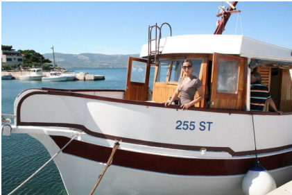
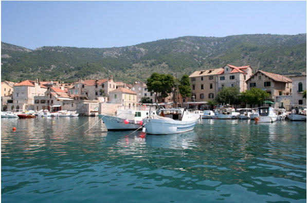
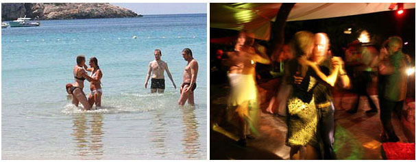
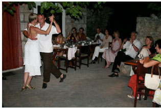

» TANGO FERIEN
MIT ADRIATANGO & FRIENDS 2010
die 5.:
Sommer, Sonne, Meer, Spaß und Erholung, herrliche Natur, leckeres Essen, eigener Wein, tolle Menschen, historische Plätze, Fishermen und Fishermen`s friends, ... und viel, viel Tango the croatian way; dazwischen natürlich intensive Workshops mit guten Lehrern, die uns mit neuen Freuden, Erfahrungen und Dimensionen des Tangos beglücken werden. Mit uns dabei in Slatine sind dieses Jahr im Mai wieder das tangotanzenschönmachende Paar aus Berlin, Susanne und Rafael. Im Juni Ivano und Constance aus dem La Yumba in Hamburg und im Juli auf der Insel Vis natürlich unsere liebe Ines Moussavi mit Constantin Rüger, sowie Ismael Ludman und Guggi Zuzakova.
Die Anmeldungen für die angebotenen Reisen laufen bereits... Wer zuerst kommt, kriegt die schönsten Zimmer und einen Platz auf der Terasse neben unserer schon ins Herz geschlossenen Oma Ruža, die immer einen vollen Krug mit ihrem eigenen Wein auf dem Tisch stehen hat,... und die Kolumbo Zigeretten im Decoltée versteckt...
Übrigens sind Kinder bei uns willkommen.
Auf Anfrage organisieren wir eine liebevolle Kinderbetreuung vor Ort.
Wir freuen uns auf einen tollen Tangosommer mit Euch; wir können es eigentlich kaum erwarten!
Saška, Željko, Susanne, Rafael, Ivano, Constance, Ines, Constantin, Ismael, Guggi…
Hier ein paar Bilder aus den vergangenen Jahren zum Einstimmen:
Link:
picasaweb.google.com

1. Tangotanzenmachtschön in Slatine
mit Susanne Opitz und Rafael Busch vom 20. bis 25. Mai 2010 (Verlängerung möglich!)
Preis: 320,- Eur
Leistung: 5 Übernachtungen (Verlängerungen für 20,-/ÜN/Person möglich.)
10 h Intensivseminar, es gibt täglich Kurse für zwei Niveaus, Mittelstufe und Fortgeschrittene.
Zusatzpaket (5x Frühstück, 2x Abendessen und 2x Bootstransfer nach Split und Trogir zur Milonga) für ca 80,- Eur,
Info-Kurs an Rafael: rafaelbusch@gmx.de,
Info über Infrastruktur vorort und Übernachtungen, sowie Kontakt zur Anmeldung an Saska:
info@adriatango.com 01577.7807717, ab 15.Mai in Kroatien: 00385.98.9455694
Bilder:
www.borisgoldammer.de
2. Tangoreise nach Slatine vom 3. bis 10. Juni 2010
mit Constance und Ivano - La Calesita
In Zusammenarbeit mit Constance und Ivano (La Yumba)
7 Übernachtungen im DZ plus Frühstück (Buffet)
6 Milongas
7,5 Std. Tangounterricht in 2 Niveauklassen
1,5 Std. Praktika
Flughafentransfer am offiziellen Ankunfts- und Abreisetag (zur Hauptankunfts-und Abreisezeit)
2 mal Bootstransfer, einmal nach Split, einmal nach Trogir
3 Abendessen, die von uns organisiert werden (z.B. Catering mit leckeren dalmatinischen Spezialitäten für eine Milonga am Strand, oder ein Abendessen mit Fisch-BBQ...)
Preis: 499 Euro
www.layumba.de
www.adriatango.com
Anmeldung
constanceHH@gmx.de 0151/21104685
baroneivano@yahoo.de 0170/936640
info@adriatango.com 01577 7807717 (Saska), in Kroatien ab Mai 00385 98 9455694

3. Tangotanzen vom 10. bis 17. Juli
mit Ismael Ludman & Guggi Zuzakova auf der traumhaft schönen Insel Vis
(auf Wunsch auch im "Doppelpack" mit Anschlusreisezu buchen - siehe 4. Reise mit Ines & Constantin.)
Gemeinsam mit Ines Moussavi besuchen wir nun schon zum 5. Mal diesen unglaublich schönen Ort Komiža, auf der Insel Vis. Die Insel Insel Vis ist bisher touristisch noch nicht sehr erschlossen und eben das macht ihren ganz besonderen Charme aus. Wir sind jedes mal völlig überwältigt von der schönen Natur und dem kristallklaren Wasser, und das als ganz treue Slatiner Lokalpatrioten...
Insgesamt 12 h Unterricht, eine Stunde am Ankunftsabend, an den Folgetagen jeweils 2 Stunden am Vormittag, mit einer Pause. Der Mittwoch ist unterrichtsfrei. An diesem Tag bieten wir gerne einen echt schönen und erholsamen Ausflug zur blauen Grotte und dem bezauberneden Strand der "Robinson-Insel" Biševo an.
Wir wohnen im Hotel Biševo in Komiza, der Strand ist direkt vor dem Hotel. Es gibt aber noch viele weitere schöne, auch abgelegene Fkk Strände.
7 Übernachtungen im DZ mit Frühstück
alle Zimmer haben Balkon und Meerblick
12 h Tangokurs , Milongas
ein Ausflug mit dem Bus ins Inselinnere zu einem sehr speziellen Restaurant mit traditioneller Küche und danach Milonga in einem alten Ballsaal mit Holzparkett
Preis: 610 Euro
Zuschlag Halbpension 5 Euro pro Tag
Zuschlag Einzelzimmer 84 Euro
Verlängerungsnächte DZ 44 Euro, EZ 56 Euro
zusätzliche Kursstunden 18 Euro/60min (z.B. bei Verlängerung)
im Reisepreis nicht enthalten: die Aircondition wird mit 8 Euro extra am Tag berechnet.
Anmeldung und Info unter ines@tangotanzen.de oder info@adriatango.com (www.tangotanzen.de)

4. Tangotanzen vom 17. bis 24. Juli
mit Ines Moussavi & Constantin Rüger in Komiza auf der Insel Vis
(Infos über Ines`Seite: www.tangotanzen.de)
7 Übernachtungen im DZ mit Frühstück
alle Zimmer haben Balkon und Meerblick
12 h Tangokurs, Milongas
ein Ausflug mit dem Bus ins Inselinnere zu einem sehr speziellen Restaurant mit traditioneller Küche und danach Milonga in einem alten Ballsaal mit Holzparkett,(bleiben viele Teilnehmer aus der ersten Woche haben wir eine andere location)
Preis: 648 Euro pro Person
Zuschlag Halbpension 6 Euro pro Tag
Zuschlag Einzelzimmer 108 Euro
Verlängerungsnächte wenn ihr länger bleiben möchtet: DZ 53 Euro, EZ 68 Euro (bei Anreise vor dem 17.Juli DZ 44 Euro, EZ 56 Euro)
Anmeldung und Info unter ines@tangotanzen.de
Fragen zur Anreise bzw. Organisation vor Ort info@adriatango.com (www.tangotanzen.de)

Hier noch weitere nützliche links für Eure Reisevorbereitung:
Bankverband.de Währungsrechner: www.bankenverband.de
Infos Flughafen Split: www.billig-flieger-vergleich.de
Busverbindung Airport Split -Hafen Split: www.plesoprijevoz.hr